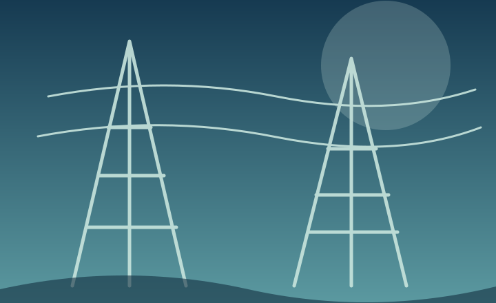
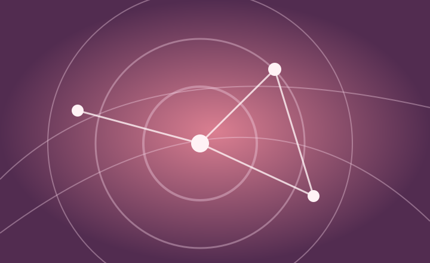

15+év szakmai tapasztalat
Üdvözöllek, Kuritár Viktória vagyok
Process Management & Operational Excellence Expert
Hiszem, hogy a jól működő folyamatok nemcsak hatékonyabb szervezeteket, hanem sikeresebb embereket és fenntarthatóbb jövőt is teremtenek. Szenvedélyem a komplexitásban rejlő lehetőségek feltárása, és a stratégia gyakorlati, mérhető eredménnyé alakítása.
Számokban a tapasztalatom
200+tervezett és optimalizált folyamat
160+meghatározott KPI
180+elkészített prezentáció
Szemléletem
„A valódi fejlődés ott kezdődik, ahol a stratégia találkozik az emberekkel, és a folyamatok értéket teremtenek a mindennapokban.”
Hiszek a rendszerszintű gondolkodásban, az együttműködésben és a folyamatos tanulásban. Számomra a hatékonyság nem cél, hanem eszköz – egy élhetőbb, emberközpontúbb és fenntarthatóbb működésért.
Ez az oldal egyszerre szakmai portfólió és nyitott tudástár: megosztom azokat a módszereket, gyakorlati tanulságokat és gondolatokat, amelyek másoknak is segíthetnek.
Tapasztalat
2022 — jelenleg
MOL Campus
Process Management Expert
E2E folyamatok, működési modell, Lean–Kaizen fejlesztések és KPI-rendszer.
2019–2022
Vodafone
Senior Process Development & Improvement Expert
Folyamatfejlesztés, digitalizáció és Six Sigma szakmai támogatás.

2018–2019
ELMŰ–ÉMÁSZ
Business Process Regulatory Expert
Ügyfélszolgálati folyamatfejlesztés, belső auditok és tudásmenedzsment-rendszerek támogatása.

2007–2017
Magyar Telekom
Folyamat- és projektmenedzsment
Ügyfélszolgálat, tudásmenedzsment, újratervezés és vezetői prezentációk.
Tudásmegosztás
Tapasztalatok, gondolatok és gyakorlati meglátások a hatékonyabb működésért.
HamarosanBlog
Gyakorlati példák, inspirációk és aktuális témák a folyamatok világából.
Hamarosan
Kapcsolódjunk
Beszélgessünk arról, hogyan teremthetünk együtt valódi értéket.